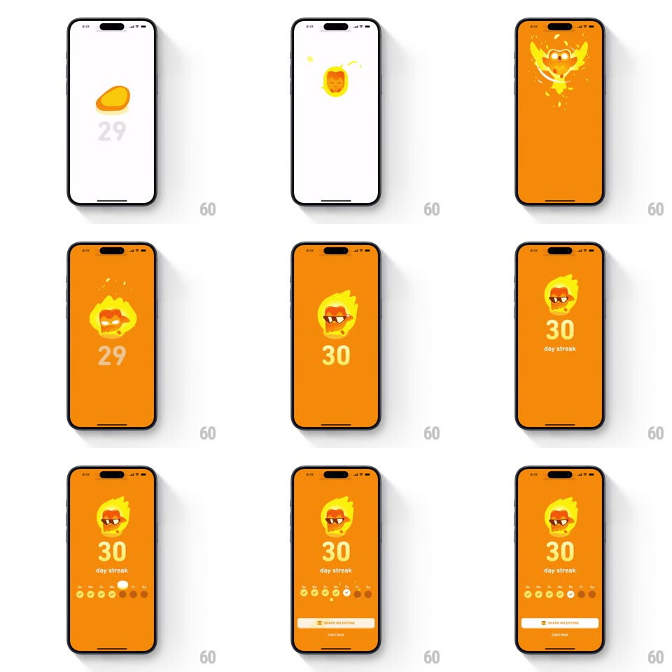

Media
Frame-by-frame

Rebuild this animation 1:1: Duolingo's 30-day streak milestone - the counter ticks to 30, the screen erupts into a fiery phoenix burst, then settles on the flaming Duo head with "30 day streak", a week-dots row, and sliding action buttons.

Rebuild this animation 1:1: Duolingo's 30-day streak milestone - the counter ticks to 30, the screen erupts into a fiery phoenix burst, then settles on the flaming Duo head with "30 day streak", a week-dots row, and sliding action buttons. ## Integration Integration: stack-agnostic spec - springs given as stiffness/damping, timed motions as duration + curve; map every value to your framework and animation library of choice. ## Scene An orange full-screen celebration: the flaming Duo mascot head center, a giant day counter, "day streak" label, a row of week-day flame dots, and SHARE MILESTONE / CONTINUE buttons. ## Motion spec Pattern: multi-stage counter tick into fire burst into staged slide-ins, ~2.5s. - Tick: the counter flips 29 -> 30 (digit roll, 300ms) as the Duo head's flame flares (scale 1 -> 1.15, 200ms). - Burst: the screen flashes and a phoenix of fire and sparks erupts from the mascot (scale 0.5 -> 1.6 + fade, 500ms), ember particles scattering outward and falling with gravity (~800ms life). - Settle: the flaming Duo head with sunglasses drops back into center (scale 1.3 -> 1, spring ~280/16, 400ms) as "30" and "day streak" land under it (slide up 20px + fade, 300ms). - Week dots: the flame-dot row staggers in left to right (scale 0 -> 1 each, spring ~440/20, 50ms apart). - Buttons: SHARE MILESTONE and CONTINUE slide up into place (spring ~340/22, 350ms, staggered 100ms). ## Calibration - The burst is the peak - everything before builds to it, everything after is calmer. - Embers obey gravity and fade; none linger. ## Reduced motion Counter ticks, a static flame glow replaces the burst, content fades in. ## Don't miss - The sunglasses Duo appears only after the burst - it is the reward frame. - Stage order is strict: tick, burst, settle, dots, buttons.